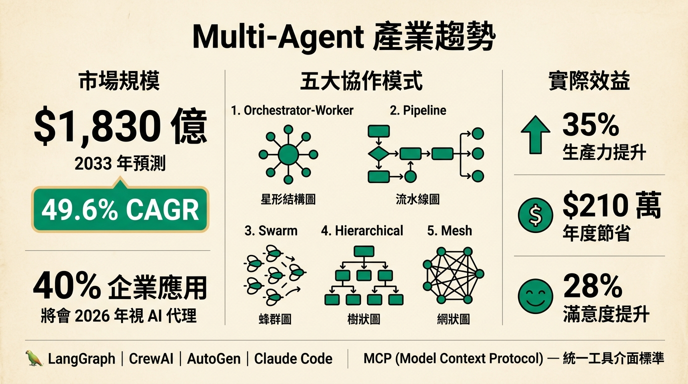
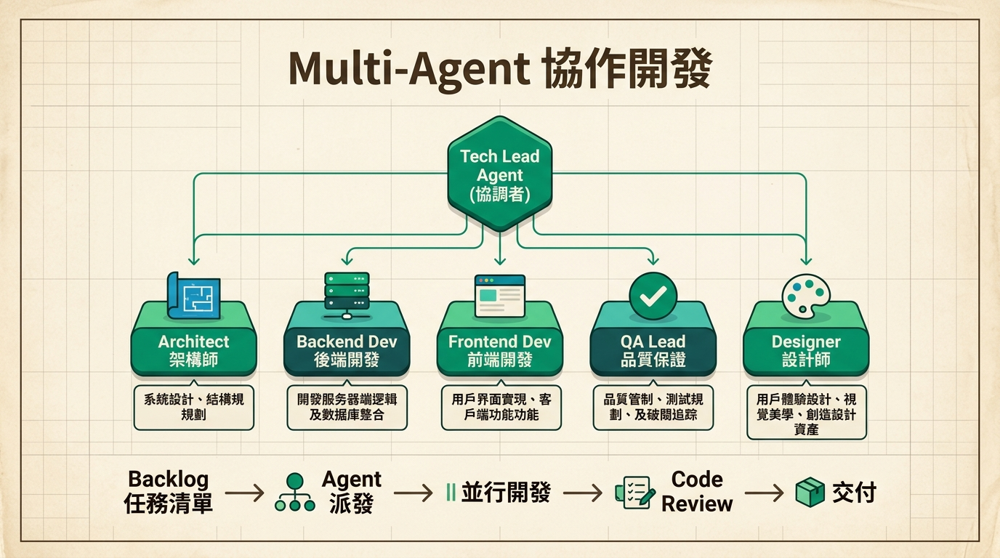

Multi-Agent
開發
Claude Code Agent Teams 實戰
快速回顧：swift-socket 開發
已經在用的工具鏈
- overnight-loop — Backlog 驅動自動調度
- Prospec SDD — 11 個 skill 工具鏈
- ECC 4 Agents — build-resolver, tdd-guide, code-reviewer, planner
- dispatching-parallel-agents — 2-4 agent 並行
- CONSTITUTION.md — 6 原則 + 8 約束
swift-socket 成果
但有個問題：這套工具鏈是手動組裝的 — CONSTITUTION 手寫、agents 手配、backlog 手建，啟動一個新專案要花大量前置時間
手動組裝的 3 個痛點
啟動成本高
每個新專案都要重新配置 agents、寫 CONSTITUTION、設計 backlog 格式，前置作業耗時
角色不標準
每次手動組隊，角色分工不一致，經驗難以複製到下一個專案
知識不延續
手動組裝無法沉澱最佳實踐，每次都在重新發明輪子
Multi-Agent 不是概念，是趨勢

Orchestrator-Worker 協作模式

Tech Lead 協調分工 → 專業 Agent 並行執行 → 結構化產出
Agent Teams — 官方多人協作
什麼是 Agent Teams？
- 多個 Claude Code session 協同工作
- 一個 Team Lead 協調分工
- Teammates 獨立 context window
- 彼此可 直接溝通（peer-to-peer）
- 支援 worktree 隔離
vs Subagent 差異
| 特性 | Subagent | Agent Teams |
|---|---|---|
| Context | 共用 | 獨立 |
| 溝通 | 單向回報 | 雙向對話 |
| 互動 | 無法介入 | 可直接對話 |
| 隔離 | 同 session | 各自 worktree |
從手動組裝
到一鍵建團隊
結合 /dev-team-creator + Agent Teams + /loop
/dev-team-creator
一鍵建立完整 AI 開發團隊，產出 3 個核心資產：
agents/ 資料夾
7 個 Agent 角色定義檔，各自有 system prompt、model 配置、職責範圍
CONSTITUTION.md
品質規範 — coding standards、commit conventions、review checklist
backlog.md
SDD 任務清單 — Stories 拆解、優先序、驗收條件
7 Agent Roles
Tech Lead
任務協調、Agent 派遣
進度追蹤
Architect
系統設計
架構決策
Dev-Backend
後端 API 實作
資料庫設計
Dev-Frontend
前端 UI 實作
元件開發
QA Lead
測試撰寫
驗收驗證
Designer
設計系統
UI/UX 規範
Prospec Expert
SDD 流程監控
進度報告
Backlog-Driven SDD
每個 Story 獨立 SDD
每個 Story 都走完整 7 階段流程，確保品質一致性。Backlog 自動追蹤進度。
Agent 自動接力
前一階段完成後，Tech Lead 自動派發下一階段給對應 Agent，無需人工介入。
/loop × Agent Teams 完整流程

開發者 → /dev-team-creator 建團隊 → /loop 自動循環 → SDD 7 階段推進 → Production Code
實戰成果
從啟動 /dev-team-creator 到所有 Stories 完成驗收，全程 Agent Teams 自主運作
Before vs After
| 面向 | 單一 Agent | Agent Teams |
|---|---|---|
| 開發方式 | Sequential — 一次一件事 | Parallel — 多 Agent 同時工作 |
| 角色分工 | 無 — 一人全包 | 7 Specialists — 各司其職 |
| 品質保證 | 自己寫自己審 | Constitution + QA Agent |
| 擴展性 | 受限於單一 context | 按需增加 Agent |
| 知識累積 | Session 結束即消失 | AI Knowledge 自動更新 |
如何開始
安裝 Claude Code + 設定 Skills
確保有 /dev-team-creator 和 /loop skill
執行 /dev-team-creator 建立團隊
描述你的專案，自動生成 agents + constitution + backlog
編寫 backlog.md 定義任務
Review 生成的 Stories，調整優先序與驗收條件
啟動 /loop 讓團隊自動運作
Agent Teams 自主推進 SDD，你只需隔天 review 成果
Questions?
歡迎提問、討論、或分享你的 Agent 使用經驗